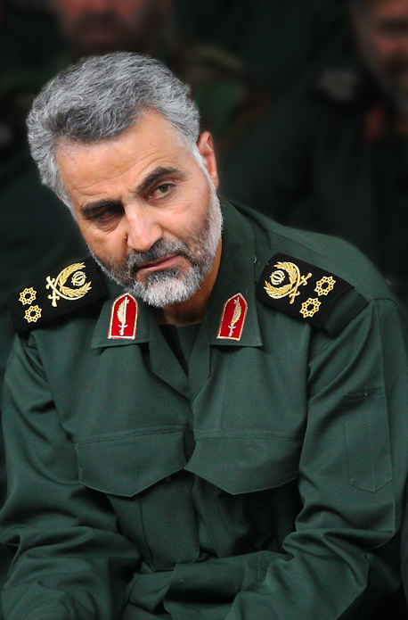

USA vs Iran
Why did the U.S attack and kill General Qasem Soleimani?
The United States killed General Soleimani because of his operations in the Middle East, and his killing marks a major escalation in tensions between Washington and Tehran. General Qasem Soleimani was also responsible for hundreds of American troops death, and he was also plotting ” imminent” attacks. The Trump administration has said that the Quds Force provided training, funding, weapons and equipment to US - designated terrorist groups in the Middle East - including the Hezbollah movement and the Palestinian Islamic Jihad group based in Gaza.
Who was Qasem Soleimani?
Qasem Soleimani was arguably the most powerful figure in the Islamic republic. As far as 2013 he was seen as the most powerful operative in the whole Middle East. It says he comes from a poor background, and have had a very little formal education. But he had risen through the Revolutionary Guards.
That is Iran’s elite and most powerful force. After he became commander of the Quds Force in 1998, he attempted to extend Iran’s influence in the Middle East. He did that by carrying out covert operations. That means that they provided arms to allies and developing networks of militias loyalty to Iran. Over his career he is believed to have aided Shia Muslim & Kurdish groups in Iraq. He also is believed to have helped other groups in the region. Qasem is also responsible for the strategy for Bashar al-Assad to respond to the armed uprising against him that began in 2011. Iranian assistance along with Russian air support helped turn the tide against rebel forces and in the Syrian government's favour, allowing it to recapture key cities and towns.
The Aftermath
After the killing of Qasem Soleimani Iran attacked a US military base, more like they shot missiles at the base. But they did not kill any american troops. Both sides were apparently able to telegraph their intentions, through public rhetoric and a Swiss diplomatic channel, to avoid miscalculations that could have spilled over into a war.
Susan Hennessey says ” I think that anybody who tells you that this is over and that the retaliation has now ceased and we can all make assessments based on where we are right now ... that's very unlikely. The story is far from over," She is a former National Security Agency attorney, she is now working for CNN and is a legal analyst.
A plane from Tehran was shortly shot down after takeoff. The plane was supposed to fly from Tehran to Kiev. The date was the 8th of January 2020, the plane had 176 passengers and they all died. The plane’s company was Ukraine International Airlines and the name of the plane was Flight 752 (PS752). Iran shot down the plane, they miss took the plane as a cruise missile. Iran fired out 2 surface - to - air missiles at the aircraft, both of the missiles made contact with the plane. Iran's president Hassan Rouhani said that the accident was an ” unforgivable mistake ”. According to General Amir Ali Hajizadeh, commander of the Islamic Revolutionary Guards Corps - airspace unit. Said that ” If there was a mistake, it was made by one of our members ”. Because people say it was a technical error were responsible for the fired missiles.
This is the type of plane that was shot down.